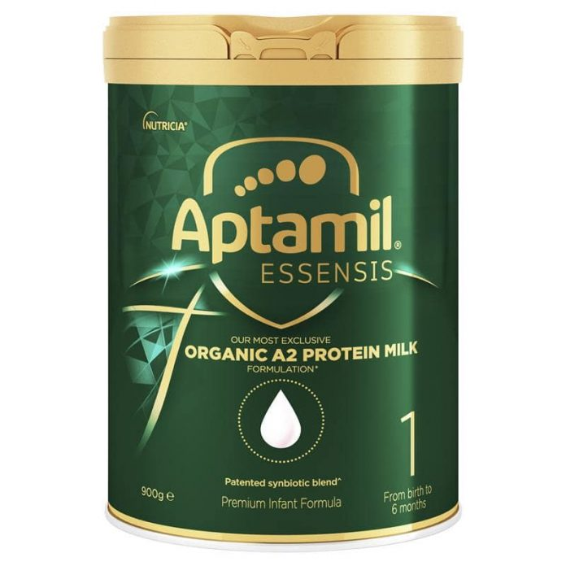
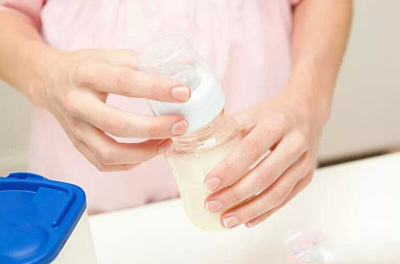

|  |
Sữa Aptamil Essensis có hộp nhỏ
Sữa Aptamil Essensis có hộp nhỏ không? Nổi tiếng là dòng sữa mát cao cấp, đặc biệt
là phù hợp với các bé có cơ địa nhạy cảm, dễ dị ứng. Sữa bột luôn là thực phẩm được mẹ quan tâm hàng đầu, đặc biệt là mẹ không có điều kiện nuôi con hoàn toàn bằng sữa mẹ. Đứng trước thị trường sữa bột phong phú, sữa bột hộp nhỏ luôn được mẹ săn tìm bởi tâm lý tránh lãng phí nếu con không thích uống hoặc không hợp sữa. |
|  |
[Hướng dẫn mẹ] Cách pha sữa Aptamil số 1,2,3,4 chi tiết nhất
Sữa Aptamil là sản phẩm sữa nhập khẩu được nhiều bà mẹ Việt Nam tin dùng cho con.
Cũng
chính vì là sản phẩm nhập khẩu nên chắc hẳn mẹ có nhiều thắc mắc về cách pha sữa. Liệu có gì khác so với cách pha các loại sữa bột trong nước hay không? Dưới đây là hướng dẫn cách pha sữa Aptamil chung cho các sản phẩm số 1,2,3,4. Với công thức tương tự nhau nên dù là sữa Aptamil Anh hay sữa Aptamil Đức thì đều có thể áp dụng được các mẹ nhé. |
Có nên cho bé bỏ bú đêm? Làm sao tập cho bé bỏ bú đêm?
Làm sao tập cho bé bỏ bú đêm là một trong những vấn đề mà mẹ bỉm sữa nào cũng gặp
phải
trong quá trình nuôi dạy con. Mỗi phụ huynh sẽ có những cách tập bỏ bú đêm cho bé riêng, phù hợp với bé nhất. Tuy nhiên nếu mẹ nào còn đang gặp rắc rối trong vấn đề này thì bài viết dưới đây sẽ là những thông tin mẹ không nên bỏ qua. |
15 LOẠI THỰC PHẨM LÀNH MẠNH GIÚP BÉ THÔNG MINH HƠN
Bất cứ người làm cha, làm mẹ nào cũng mong muốn cho con của mình phát triển toàn
diện cả
về thể chất và trí tuệ. Bên cạnh yếu tố di truyền, thì môi trường, thực phẩm bé ăn hằng ngày cũng góp phần quan trọng trong việc phát triển trí não của bé. Bởi vì trong một số thực phẩm có những dường chất vô cùng tốt thúc đẩy sự thông minh. Vậy nên cho bé ăn gì cho thông minh hơn? Ba mẹ tham khảo 15 loại thực phẩm dưới đây nhé. |

|
TRẺ NGỦ KHÔNG NGON GIẤC, GIẬT MÌNH, QUẤY KHÓC ĐÊM – NGUYÊN
Nguyên nhân khiến trẻ ngủ không ngon giấc, giật mình và quấy khóc đêm
|

|
Cách chăm sóc rốn cho trẻ sơ sinh
Chăm sóc trẻ sơ sinh đúng cách là cần phải biết cách chăm sóc rốn cho trẻ sơ sinh.
Cuống rốn của trẻ sơ sinh là một vết thương hở, nếu không được chăm sóc đúng cách sẽ rất dễ bị nhiễm trùng. Đây là một tình trạng rất nguy hiểm, nếu không được phát hiện và điều trị kịp thời có thể gây biến chứng nhiễm trùng máu ở trẻ.Việc chăm sóc rốn cho trẻ sơ sinh cần phải được làm hằng ngày |
Cách chăm sóc trẻ sơ sinh: Đặt bé ngủ sao cho đúng?
Phòng ngủ của bé nên sạch sẽ, thoáng mát và yên tĩnh để bé dễ ngủ. Với trẻ sơ sinh
đủ
tháng, khỏe mạnh, nhiệt độ phòng thích hợp là khoảng 28ºC. Nếu dùng điều hòa, bạn không nên để nhiệt độ phòng quá thấp vì có thể khiến bé bị cảm lạnh dù đã được quấn khăn và đắp chăn đầy đủ. |